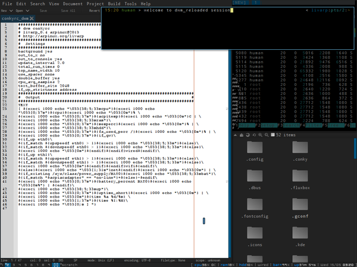

lang fr|gb

the dwm_reloaded session
dwm is written in C ... no automatic refresh .. you want to configure? then you must compile :)
dwm has remained simple ..virgin i would say: virgin from any gadget and other options that slow down environment and ultimately affect the performance of the computer and the user, while it was not the primary idea.
dwm is distributed by suckless.org Dedicated to software that sucks less ... and adopts the KISS philosophy.
dwm is fully controllable from the keyboard but can also make good use of your mouse (moving clients, resize on the fly ..).
i have to admit ... it's my favorite session :)
screenshot
{kind=link}
DWM is a tiling window manager, it displays your windows (clients) so that they occupy the entire surface of the desk (tags). occupied tags are indicated by a small square. clients are organized in different ways (layouts) to optimize the visibility of your applications. layouts are organized around the Master (main zone) and Stack (stacking area from other clients).
startup
dwm is launched from the ~/bin/start/dwm_start.sh script.
to modify startup applications, simply edit this file:
components
dwm_reloaded session is organized with different elements:
- DWM:the window manager itself, based on dwm-6.1 and largely patched to enhance and facilitate the handling of the tiling. (list of patches applied at the bottom of page)
- dwm-statusbar: display taglist, tag layout button, tasklist and a minimal conky: cpu, ram and hdd usage, date and time (configurable from ~/.conky/.conkyrc_dwm).
- dwm menu: available from top-left corner and handled by fbpanel. it includes a complete menu of installed applications, configuration section and a systray (configurable from ~/.config/fbpanel/default or from the menu itself).
configuration
to configure conky, you have to edit its conkyrc:
to configure fbpanel, edit its configuration file
if you want to add plugins, please visit the dedicated page.
dwm configuration through the compilation of sources.
dwm does not have a configuration file, if you want to change behavior, you must recompile dwm from source. an archive containing the sources fr/us is located in /usr/share/livarp/sources.
a mini tutorial explains the process at the end of this page.
keybinds/mousebinds
dwm is fully controllable from the keyboard: control, launchers, navigation, tags and clients manipulation...
keybinds/mousebinds are defined in the config.h file from sources when compiling. Some applications are configured to open in specific tags
menus:
- dwm menu: top-left corner of the screen
- dmenu: Alt+p or Super+d
- dmenu-google: Super+g
- dmenu-home: Super+h
control:
- reload dwm: Ctrl+Alt+r
- quit dwm:Ctrl+Shift+Alt+q or from dwm menu:exit
- toggle hide the statusbar: Alt+b
windows:
- close client: Alt+q
- previous client: Alt+j
- next client: Alt+k
- pushdown client in the list: Ctrl+Alt+j
- pushup the client in the list: Ctrl+Alt+k
- put the client in the master: Alt+Enter or right-click on the client title in the statusbar
- toggle free client: Alt+Shift+Space
- move client: Alt+left-click
- resize client: Alt+right-click
navigation:
- previous/next tag: Ctrl+Left/Right
- swap the previous tag: Alt+Tab
- view alltag: Alt+0 (to escape, Alt+'number')
- tag client with alltags: Alt+Shift+0 (to escape Alt+Shift+'number')
- view previous/next screen: Alt+Down/Up
- tag client with previous/next screen: Alt+Shift+Down/up
- view tag 'n': Alt+'n' or left-click on the tag in the taglist
- tag client with tag 'n': Alt+Shift+'n' or Alt+left-click on the tag in the taglist
- toggle view client in tag 'n': Ctrl+Alt+'n' or right-click on the tag in the taglist
layout
- increase master area: Alt+l
- decrease master area: Alt+h
- increase clients in master area: Alt+i
- decrease clients in master area : Alt+d
- tile layout: Alt+t or left-click on layout button. (master on left, stack on right [|])
- bottomstack layout: Alt+s or middle-click on layout button. (master on top, stack on bottom [-])
- monocle layout: Alt+m or right-click on layout button. (clients maximised, number of clients is indicated in the layout button) [0]
- free layout: Alt+f (no layout at all) [ ]
- last layout: Alt+Space
- next layout: Super+Space
- previous layout: Super+Shift+Space
launchers:
- default terminal: Ctrl+Enter
- toggle hide the scratchpad: F12 (free popup terminal)
- launch ranger: Alt+r
- launch rox-filer: Alt+Shift+r
- launch firefox: Alt+w
- launch vim: Alt+e
- launch geany: Alt+Shift+e
- launch weechat: Alt+x
- music player: Alt+z
- volume control: Alt+v
dwm compilation
this process may seem dark or scary but it is very simple: the goal is to build the executable file "dwm" from source. sources are recovered, they are modified, then we apply the famous "make/sudo make install/make clean" and voila :). an archive containing these sources is available in your / usr/share/livarp/sources/dwm-6.1-reloaded.zip.
compilation process
- sources recovery:
cd ~/tmp
cp /usr/share/livarp/sources/dwm_reloaded_l4.tgz .
extract dwm_reloaded_l4.tgz
- cd into the us directory then edit the file with dwm configuration, config.h:
cd dwm_reloaded_l4/fr
vim config.h
or
geany config.h
- once modifications made, let's compile
make
sudo make install
make clean
your new dwm release is installed, to reload dwm, Ctrl+Alt+r
patchs list applied to dwm-6.1
/* dwm_reloaded for livarp_0.4 based on dwm_6.1 * patches & mods : * attachabove http://dwm.suckless.org/patches/attachabove * bottomstack http://dwm.suckless.org/patches/bottom_stack * float_border_color http://dwm.suckless.org/patches/float_border_color * push up/down http://dwm.suckless.org/patches/push * pertag http://dwm.suckless.org/patches/pertag * scratchpad https://github.com/ok100/dwm/blob/master/03-dwm-6.0-scratchpad-stay.diff * cycle-layout https://bbs.archlinux.org/viewtopic.php?id=103402 * ansistatuscolors http://dwm.suckless.org/patches/ansistatuscolors * view_prev/next_tag forum post * urgent_tag color http://www.mail-archive.com/dwm@suckless.org/msg06657.html */